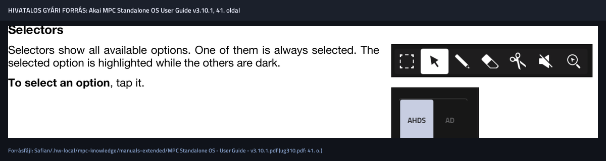
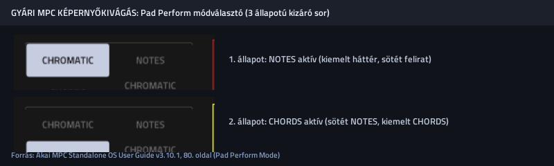

1. Igazolt gyári Akai MPC források
A) Hivatalos Selector definíció (Akai OS v3.10.1, 41. o.)
„Selectors show all available options. One of them is always selected. The selected option is highlighted while the others are dark. To select an option, tap it.”

Forrás: MPC Standalone OS - User Guide - v3.10.1.pdf, 41. oldal (ug310.pdf: 41. o.)
B) Pad Perform 3-tagú módválasztó (80. o.)
A NOTES, CHORDS és PROGRESSIONS kölcsönösen kizáró funkciósor valódi MPC képernyőkön:

Forrás: MPC Standalone OS - User Guide - v3.10.1.pdf, 80. oldal